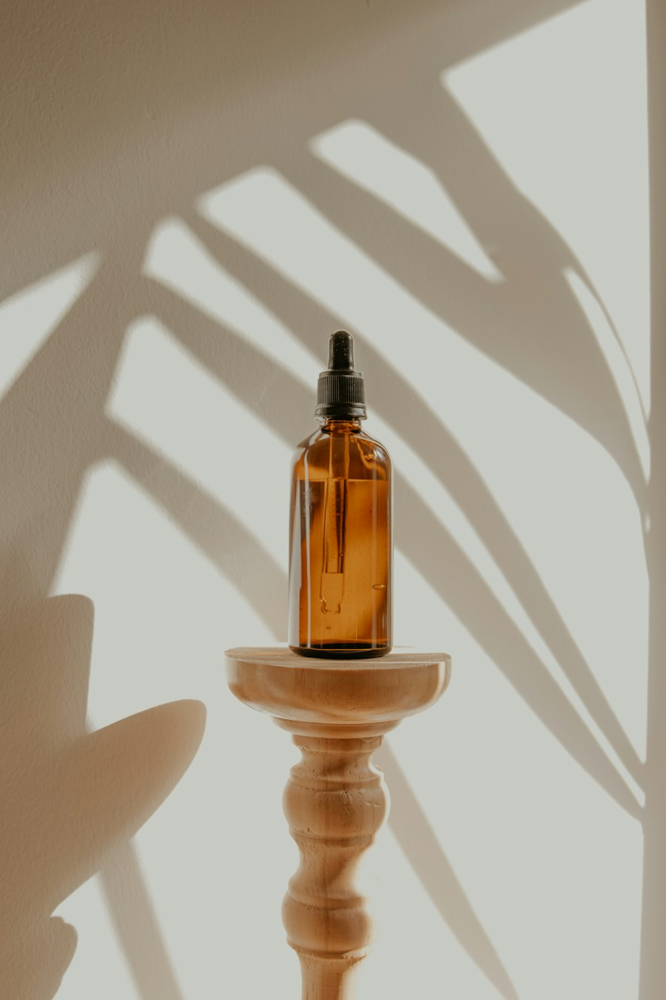

A guided approach to traditional cleansing and restorative care, personalised by a physician.
✳ ROOTED IN NATURE. CENTRED ON YOU.
Find your way
back to balance.
Thoughtful Ayurvedic care for the life you live.
Rediscover wellbeing through time-honoured wisdom
and a care plan that’s uniquely yours.
A little nature. A lot of care.Personalised Ayurveda, at your own pace.

THE ART OF FEELING WELLCare that listens.
Healing that feels personal.
Healing that feels personal.
ANCIENT WISDOM. EVERYDAY WELLBEING.
Rooted in AyurvedaTradition with thoughtful intent
Care for the whole youBody, mind, and everyday life
Your own path to wellbeingNo two journeys are the same
CARE, THE NATURAL WAY
Small steps.
Meaningful change.
From a moment of calm to a more balanced routine,
explore care shaped around your needs.
Slow, intentional rituals with warm oils, designed to help you pause and reconnect.
Make space for movement, breath, and a gentler rhythm in your everyday life.
A considered conversation about your health, your routine, and what matters to you.
Practical guidance to bring more intention to how you eat, rest, and move.
Discover traditional relaxation rituals in a calm and thoughtfully prepared space.
Not sure where to begin? Let’s find your first step together.

Swasthyam / Our purpose /A return to your natural balance.
THE SWASTHYAM PHILOSOPHY
There is no one
quite like you.
And we believe your care should reflect that.
Ayurveda begins with understanding the individual. Your habits, your environment, your story. At Swasthyam, that means taking the time to listen before we begin.
We bring traditional wisdom into everyday life, with a thoughtful approach that feels personal, practical, and deeply human.
A person-first approach Care with clarity A focus on everyday wellbeing
GOOD CARE BEGINS WITH GOOD LISTENING
A human touch.
A thoughtful approach.
Meet the doctor at the heart of Swasthyam.
Here to listen, understand, and guide your next step.
YOUR CARE AT SWASTHYAM
Your Ayurvedic doctor
A personal approach to your wellbeing, with one doctor to understand your story and guide your care.
Start with a conversation about your concerns, your daily rhythm, and the questions that matter to you.
Time to listen Individual care Clear next steps
YOUR FIRST STEP, MADE SIMPLE
Come as you are.
We’ll take it from here.
Let’s get to know you
A conversation about your concerns, daily rhythm, and wellbeing goals.
A path that feels like you
Explore an individual plan, with clear guidance and room for your questions.
Care that moves with you
Take practical steps, check in, and adapt your routine along the way.
A LITTLE WISDOM FOR EVERY DAY
The wellbeing journal.
A FEW THINGS YOU MAY BE WONDERING
Let’s clear
things up.
Every good journey starts with a question.
What happens during my first consultation?+
Your first visit is a conversation about your concerns, health history, daily habits, and goals. A practitioner can explain suitable next steps and answer your questions before any treatment is planned.
Do I need to choose a treatment before I visit?+
No. You can begin with an Ayurvedic consultation. Your practitioner will discuss your needs and help you understand which options may be appropriate for you.
Can I continue my existing medications?+
Bring a list of medicines and supplements to your consultation. Do not change prescribed medication without speaking with the clinician who prescribed it. Any proposed Ayurvedic treatment should be reviewed for suitability and interactions.
How do I book an appointment?+
Use any “Book a consultation” button to explore the sample booking experience. This concept website does not submit real appointments or send your details to a clinic.
A NEW CHAPTER IN YOUR WELLBEING
Your journey to balance
begins with a conversation.
You don’t have to have it all figured out. Let’s start together.
In-clinic and online consultation options